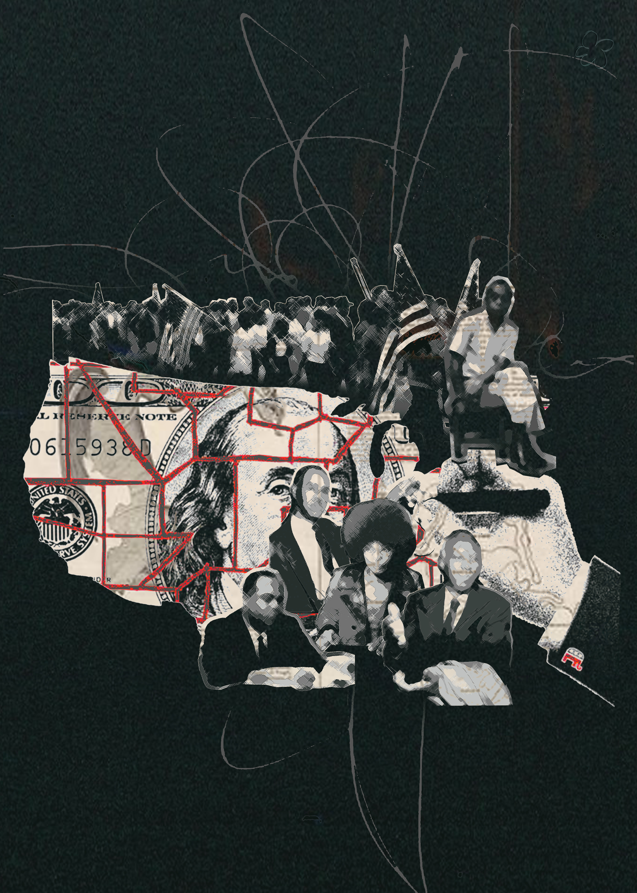
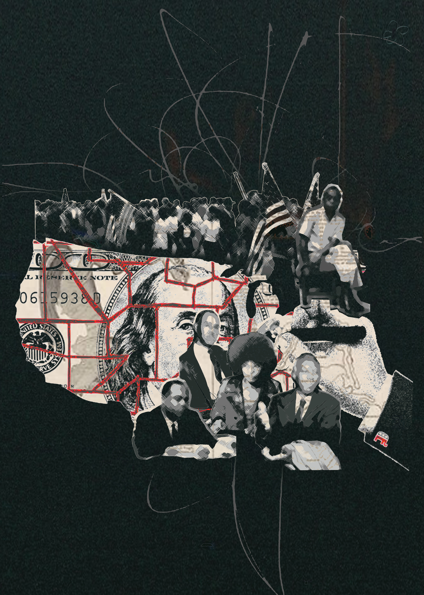

For the first project on the far left I explored the issue of American media, and how it is used as a tool to negatively influence society. The tv people are meant to be representative of the media, while the puppet hand is the government that controls it. Together they stimulate or “wash” the brain until it glows, meaning the brain has successfully responded and released dopamine. For this project, I masked out pictures of people cleaning that I found online. I used the same process on the brain, the tvs, and the hand. After masking the pictures out, I applied and blended gradient maps on top of everything to give it a more uniform look. Additionally, underneath the gradient map layer I posterized everything to give the graphic a pop art/more cartoony feel. Then for the textures I used the soft light and divide blending modes to bring it all together.
For the second project on the far right I explored the issue of the disenfranchisement of black Americans. I wanted to send a message, expressing that despite all the hard work our people have put in in the past, this still remains a problem today. Additionally, I used the hand gerrymandering the map to illustrate how this process is used to further disenfranchise African Americans. For this project, I collected photos of civil rights activists online and used the polygonal tool to give them a paper cutout effect. Playing with the filter gallery, I landed on the crosshatch tool that gives them a geometrical feel, further playing into the cutout effect. I used this same process on the cutout of the activists marching on top of the map. Finally, for the texture I used the lighten blending mode.